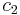
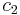
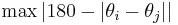
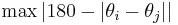

Robust clump splitting
| Robust Clump Splitting (Fiji) | |
|---|---|
| Author | LouiseBloch, Thorsten Wagner |
| Maintainer | LouiseBloch, Thorsten Wagner |
| File | ij_robust_split.jar [] |
| Source | Github [1] |
| Latest version | v1.0.0 (04 Sep 2016) |
| Development status | active |
Contents
Purpose
This plugin is an implementation of the concavity-based clump splitting algorithms described in:
Kumar, S., Ong, S.-H., Ranganath, S., Ong, T., und Cheq, F. (2005). A rule based Approach for robust clump splitting. Pattern Recognition, 39(6), pp.1088–1098.
Farhan, M., Yli-Harja, O., und Niemistö, A. (2013). A novel method for splitting clumps of convex objects incorporating image intensity and using rectangular window-based concavity point-pair search. Pattern Recognition, 46(3), pp.741–751.
and
Wang, H., Zhang, H., und Nilanjan, R. (2011). Clump splitting via bottleneck detection. IEEE International Conference Image Processing, 2, pp.61–64.
The plugin provides an alternative to the ImageJ "build-in"-watershed-plugin. It does not perform better results on regular round clumps. Especially for big clumps with image disturbances and many holes in the clump the results of the watershed plugins are much more robust and it does not depends on so many parameters. For elongated indididual objects, the plugin can produce better results than the watershed.
It depends on the IJ-Blob library, the Vecmath library, the LIBSVM library and the JavaML library.
Plugin usage
If you start the plugin you can choose between two main uses, you either want to split clumps of an image or want to train a SVM to optimize parameters  and . To train the SVM you need to have input data already.
and . To train the SVM you need to have input data already.
Detection Types
The plugin supports different types of split lines, concavity region detection and concavity pixel detection. If you want to split a clump you have to choose, what kind of detection you want to use.
Split Lines
The plugin supports different split line types, which should be specified:
Straight Split Line: The straight split line is a straight line between two concavity pixels. When to use? : If no intensity information for better split lines is available use this line.

Geodesic Distance Split Line: The geodesic distance split line uses the path of maximum intensity change between two concavity pixels. It is detected by the algorithm of Wang et al. When to use? : If the individual objects can be distinguished by intensity and the split lines are not to convex.

Maximum Intensity Split Line: The maximum intensity split line uses the path of maximum intensity between two concavity pixels. It is detected by the algorithm of Wang et al. When to use? : If the intensity of the individual objects is higher at the edge, than in the center and the split lines are not to convex.

Minimum Intensity Split Line: The minimum intensity split line uses the path of minimum intensity between two concavity pixels. It is detected by the algorithm of Wang et al. When to use? : If the intensity of the individual objects is lower at the edge, than in the center and the split lines are not to convex.

Maximum Intensity Split Line Farhan: The maximum intensity split line uses the path of maximum intensity between two concavity pixels. It is detected by the algorithm of Wang et al. When to use? : If the intensity of the individual objects is higher at the edge, than in the center and there are no clumps without intensity information, and the split line does not change orientation to often.
Minimum Intensity Split Line Farhan: The minimum intensity split line uses the path of minimum intensity between two concavity pixels. It is detected by the algorithm of Farhan et al. When to use? : If the intensity of the individual objects is lower at the edge, than in the center and there are no clumps without intensity information, and the split line does not change orientation to often.
Concavity Region Detection
The plugin supports different concavity region detection types. It specifies, in which way a concavity region is detected.
Detect outer concavity regions by convex hull: The concavity region detection by convex hull corresponds to the algorithm of Kumar et al. Concavity regions are detected, if there is a difference between convex hull and contour of the clump. Use this detection, if there are few clumps with less complex concavity regions. The blue shaded regions are the detected concavity regions.

Detect outer concavity regions locally: The local concavity region detection follows the algorithm of Farhan et al. Concavity regions are detected, by iterating along the contour and look for local concavity regions. Use this detection, if there are complex clumps consisting of many individual objects.

Concavity Pixel Detection
The plugin supports different concavity pixel detection types. The chosen type specifies which and how many concavity pixels can be detected.
Detect all concavity pixels: If all concavity pixels should be detected, the plugin is looking for all local concavity pixels. Use it, if you have chosen the concavity region detection by convex hull.

Detect all concavity pixels with largest concavity depth:
If all concavity pixel with largest concavity depth should be detected, the plugin is looking for the global concavity pixels of a concavity region. Use it, if you have choosen the local concavity region detection.

SVM
The parameters and can be optimized by a linear SVM. This SVM is integrated in the plugin and uses the LIBSVM library.
If you want to train the SVM you have to generate training and testdata first. There is currently no easy way of generating those.
Firstly you have to generate an image with optimal split lines manually. This may be a time consuming and complex task. The overlay of the plugin tries to aid at this point, but it could be complex as well. Therefoe it could be easier to separate individual clumps and split them separately. Now you have to generate traing data by the plugin. In the progress the SVM writes data and whether or not it is a split line to a CSV-File. The data is the sum of concavity depths of the concavity pixels at the x axis and the distance between the points at y axis.
Now you have to look for a good cost- and epsilon parameter of the SVM. This could happen by a grid search for example.
After this the SVM starts training. This could take some time. The duration depends on complexity and size of the training data.
Once the SVM was trained, there are two windows, showing the results. In the first window you can see a graphical representation of the SVM model. The blue points represent the split line class, the red points represent the no split line class data and the green line represents the dividing line of the SVM.
The second window shows the parameters of this model. The optimum for and parameters, are given together with the number of support vectors and a confidencial matrix to evaluate the model.

Parameters
As already mentioned the main algorithm follows the publication of Kumar et al. The presented algorithm to specify a valid split line depends on lots of parameters, as you can see below. Not every parameter is needed for every split line type and concavity region detection
background color: Choose the color of your background. Choose white, if the objects are darker than the background, and black if the objects are lighter than the background.
is already preprocessed: Choose whether or not your picture is already preprocessed. If unchecked, preprocessing will be executed before the algorithm starts. The default-preprocessing contains: binarization, erosion, gaussian blur ( ), dilation
), dilation
Show concavity regions: If checked, an overlay shows detected concavity regions, this could help to detect good thresholds and to detect mistakes in detection.
Show concavity pixels and split points: If checked, an overlay shows detected concavity pixels, this could help to detect good thresholds and to detect mistakes in detection.
write data in file to train SVM: If checked, data for the SVM-Model is written to a file of your choice.
binarization threshold: Threshold to binarize an image. Default: Detected value for the image by ImageJ default method.
concavity-depth threshold: Largest distance of a concavity region in pixels  . Threshold should be smaller than minimum concavity-depth value of a valid concavity pixel.
. Threshold should be smaller than minimum concavity-depth value of a valid concavity pixel.
saliency-threshold: The ratio of concavity-depth and distance of two concavity pixels, increases, if less split lines are detected.

concavity-concavity-alignment-threshold: Angle between orientation of the two concavity regions.  . Threshold should be greater than  of all valid split lines.
. Threshold should be greater than  of all valid split lines.

concavity-line-alignment-threshold: Angle between orientation of a split lines concavity pixel and the split line. 

concavity-angle-threshold: Angle of a concavity region.  Threshold should be larger, than the maximum angle of a concavity region where a split line between concavity pixel and contour point is expected.
Threshold should be larger, than the maximum angle of a concavity region where a split line between concavity pixel and contour point is expected.

concavity-ratio-threshold: Ratio between first and second largest concavity regions.  Threshold should be smaller than the maximum ratio of valid split line between concavity pixel and contour point.
Threshold should be smaller than the maximum ratio of valid split line between concavity pixel and contour point.
inner-contour-parameter: Same as inner contour constant. If the inner contour is large and round, choose a large constant, else choose a small constant.
outer-contour-parameter: Same as outer contour constant. If concavity regions are big, choose a large value, otherwise choose a small value.
picture section for intensity: For split line detection of Wang et al. you need to determine a picture section, in which the split line should be detected. Choose a large value if clumps and split lines are large and a small value if clumps and split lines are small.

: Parameter to validate a split line, for an optimal value train SVM.
: Parameter to validate a split line, for an optimal value train SVM.
 -threshold: Parameter to validate a splitline.
-threshold: Parameter to validate a splitline.  Decrease threshold value if there are less split lines.
Decrease threshold value if there are less split lines.
Installation
If you use ImageJ just copy ij_robust_split.jar in your plugins folder and copy the IJ-Blob, Vecmath, the LIBSVM and the JavaML jars into the plugins/jars folder.
How to cite
The best way to cite the formal methods is:
Kumar, S., Ong, S.-H., Ranganath, S., Ong, T., und Cheq, F. (2005). A rule based Approach for robust clump splitting. Pattern Recognition, 39(6), pp.1088–1098.
Farhan, M., Yli-Harja, O., und Niemistö, A. (2013). A novel method for splitting clumps of convex objects incorporating image intensity and using rectangular window-based concavity point-pair search. Pattern Recognition, 46(3), pp.741–751.
and
Wang, H., Zhang, H., und Nilanjan, R. (2011). Clump splitting via bottleneck detection. IEEE International Conference Image Processing, 2, pp.61–64.